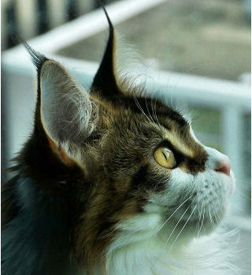

Mainecoon
The Maine Coon is a large domesticated cat breed. One of the oldest natural breeds in North America, the breed originated in the U.S. state of Maine,where it is the official state cat.The Maine Coon is a large and social cat, commonly referred to as "the gentle giant." The Maine Coon is predominantly known for its size and dense coat of fur which helps it survive in the harsh climate of Maine. The Maine Coon is often cited as having "dog-like" characteristics.
History
The Maine Coon is one of the largest domesticated cats. It has a distinctive physical appearance and valuable hunting skills. The breed was popular in cat shows in the late 19th century, but its existence became threatened when long-haired breeds from overseas were introduced in the early 20th century. The Maine Coon has since made a comeback, and in 2025 the Maine Coon overtook the Ragdoll, becoming the most registered cat breed with the Cat Fanciers' Association.
Origin
Myths
Maine Coon cats are known to have originated in Maine. However, their lineage is surrounded by mystery, folk tales, and myths. One myth claims the Maine Coon cat is a hybrid with another animal species, such as the raccoon or bobcat. The second myth states the cats are descendants of Viking ship's cats, known today as the Norwegian Forest cats. A third story involves Marie Antoinette, the Queen of France who was executed in 1793. The story goes that before her death, Antoinette attempted to escape from France with the help of Captain Samuel Clough. She loaded Clough's ship with her most prized possessions, including six of her favorite Turkish Angora or possibly Siberian cats. Although she did not make it to the United States, all of her pets managed to reach the shore of Wiscasset, Maine, safely, where they bred with other short-haired breeds and developed into the modern breed of the Maine Coon.
Science
These myths and theories have long speculated that the long-haired Maine Coon cat has to be related to other long-haired breeds, due to their similarities in phenotype. This is true for the Maine Coon in particular, that it is descended from the Norwegian or Siberian Forest cat, brought to New England by settlers or Vikings.Phylogenetic studies showed that the Maine Coon belongs to the Western European monophyletic cat branch, but forms the closest relationship with the random-bred cat population in the Northeastern US (New York region).This Western European branch contains the Norwegian and Siberian.

Thank you!!!
go back>>>